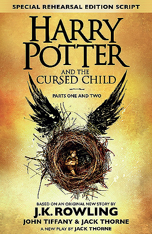

Harry Potter and the Cursed Child
⭐️⭐️⭐️⭐️
Format: physical ()
It was nice to be around such familiar characters again. The nature of the book (that of a script) detracted from the Rowling's normal ability to build characters and suspense. Despite that, it was an enjoyable story.
- Previously: The Fault in Our Stars
- Next: Anne of Green Gables